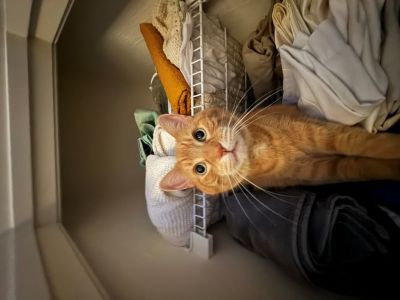

Hi, my name is Cameron Jones. I am currently a sophmore majoring in Mechanical Engineering Technologies at the University of Cincinnati. During school semesters I often time seek time to spend with friends and make time for both my friends at the University and friends from my hometown whether it be online playing games or calling them just to talk.
I'm originally from Olmsted Falls, OH. It's kind of a small towm which may make it feel like im out in the middle of nowhere, but in other ways it can make it feel like I know everyone I see which can make social interation feel less scarce.
Since I am an Engineering student, I alternate semesters back home workin as a Co-op for engineering related companies and schooling at UC. This makes me very busy but it makes my life and my future something to look forward to.
Speaking of things to look forward to, while im back home working as a Co-op I like to take time doing things I like to do with my friends such as playing some beach volleyball. Other times ill listen to music 🎧 while sitting outside, hangout and talk to my family or even play with my pets. I have a couple of pets;
